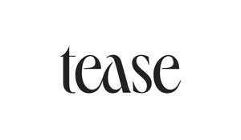

Trade Mark Journal No.2026/009 27 February 2026
UK00004339399 11 February 2026 (30,32,43)

- Class 30
- Tea; tea bags; tea leaves; instant tea; artificial tea; iced tea; tea-based beverages; tea extracts; tea essences; tea substitutes; coffee; instant coffee; ground coffee; artificial coffee; cocoa; sugar; rice; tapioca; sago; flour and preparations made from cereals; bread and pastry; pasta and noodles; chocolate; chewing gum; confectionery; pastries; honey, treacle; yeast, baking powders; salt, mustard; vinegar, sauces; spices; desserts; rice-based prepared meals; snack foods consisting principally of confectionery; ice, ices and ice cream; frozen desserts.
- Class 32
- Beers; mineral and aerated waters; non-alcoholic drinks; energy drinks; juices; juice drinks; fruit drinks and fruit juices; smoothies; syrups and other preparations for making beverages.
- Class 43
- Services for providing food and drink; restaurant and bar services; café services; temporary accommodation; nightclub services for the provision of food and drink; hotels; motels; providing information relating to the preparation, serving and presentation of food and beverages; catering services; provision of information in respect of dining and wine, hotel accommodation, restaurant services, cafeteria, café and bar services; rental and hiring of catering equipment, and of equipment and products for the preparation, serving and presentation of foods and drinks; consultancy, information and advisory services relating to the preparation, presentation, service and provision of foods and drinks and for all the aforesaid services; reservation services relating to any of the aforesaid; consultancy, information and advice services relating to any of the aforesaid; any of the aforesaid provided via a website, webpage or portal; including (but not limited to) the aforesaid services provided online, and/or provided for use with and/or by way of the Internet, the world wide web and/or via communications, telephone, mobile telephone and/or wireless communication networks.
Enel Hospitality Ltd
Representative: Beck Greener LLP